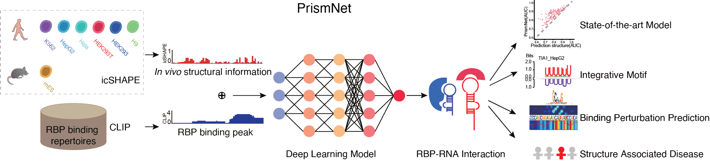
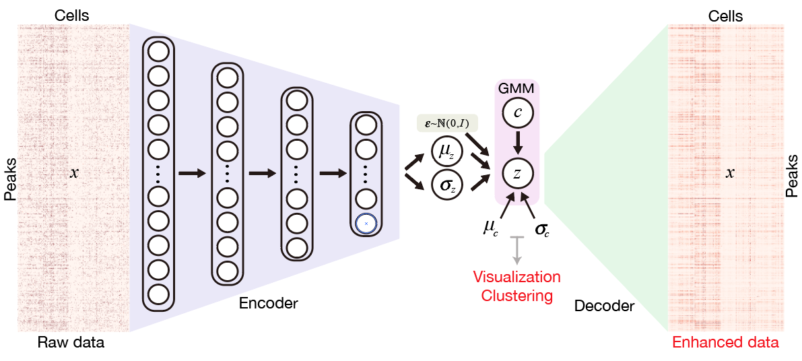
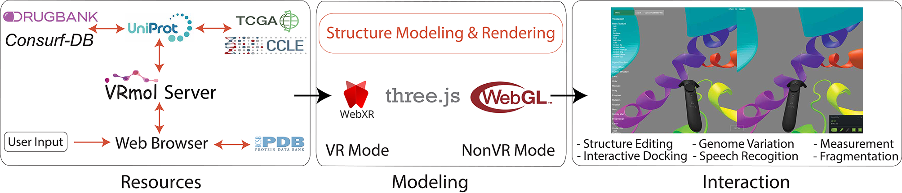
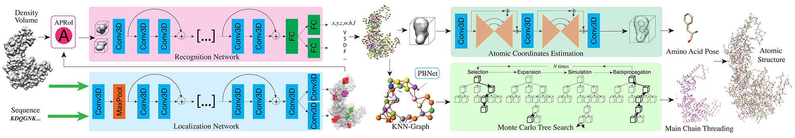
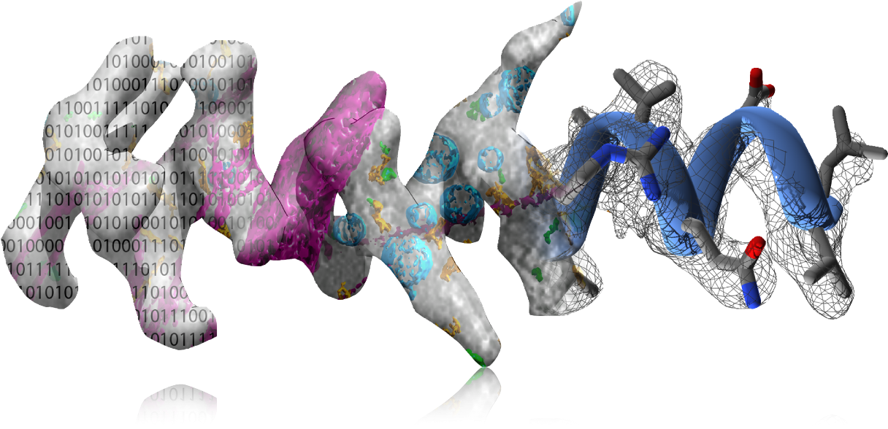

What's New
[May 2020] Paper out on BioRxiv: Predicting dynamic cellular protein-RNA interactions using deep learning and in vivo RNA structure,
code are available at PrismNet.
[Jan 2020] Ones paper accepted to ICRA 2020.
[Oct 2019] Paper out on Nature Communication: SCALE method for single-cell ATAC-seq analysis via latent feature extraction, code are available at SCALE.
[Mar 2019] Paper out on BioRxiv: VRmol: an Integrative Cloud-Based Virtual Reality System to Explore Macromolecular Structure,
code are available at VRmol.
[Jan 2019] Presented my work A2-Net at AAAI 2019, Hawaii.
Research
Predicting dynamic cellular protein-RNA interactions using deep learning and in vivo RNA structure
Lei Sun*, Kui Xu*, Wenze Huang*, Yucheng T. Yang, Lei Tang, Tuanlin Xiong and Qiangfeng Cliff Zhang

SCALE method for single-cell ATAC-seq analysis via latent feature extraction
Lei Xiong, Kui Xu, Kang Tian, Yanqiu Shao, Lei Tang, Ge Gao, Michael Zhang, Tao Jiang and Qiangfeng Cliff Zhang

VRmol: an Integrative Cloud-Based Virtual Reality System to Explore Macromolecular Structure
Kui Xu, Nan Liu, Jingle Xu, Chunlong Guo, Lingyun Zhao, Hong-Wei Wang and Qiangfeng Cliff Zhang

A2-Net: Molecular Structure Estimation from Cryo-EM Density Volumes
Kui Xu, Zhe Wang, Jianping Shi, Hongsheng Li and Qiangfeng Cliff Zhang

SegVoxelNet: Exploring Semantic Context and Depth-aware Features for 3D Vehicle Detection from Point Cloud
Hongwei Yi, Shaoshuai Shi, Mingyu Ding, Jiankai Sun, Kui Xu, Hui Zhou, Zhe Wang, Sheng Li and Guoping Wang
Bioactive functionalized monolayer graphene for high-resolution cryo-electron microscopy
Nan Liu, Jincan Zhang, Yanan Chen, Chuan Liu, Xing Zhang, Kui Xu, Jie Wen, Zhipu Luo, Shulin Chen, Peng Gao, Kaicheng
Jia, Zhongfan Liu, Hailin Peng and Hong-Wei Wang
RISE: a database of RNA interactome from sequencing experiments
Jing Gong*, Di Shao*, Kui Xu, Zhipeng Lu, Zhi John Lu, Yucheng T. Yang, Qiangfeng Cliff Zhang
Reweighted sparse subspace clustering
Jun Xu, Kui Xu, Ke Chen, Jishou Ruan
Open Source
Kitti Object Visualization
Data Transformation and Visualization for
Kitti Object Detection Dataset, including mapping 3D boxes on LiDar point cloud in volumetric mode,
mapping 2D and 3D boxes on Camera image, mapping 2D boxes on LiDar Birdview and mapping LiDar data on Camera image.
Implementing a 3D
DenseNet for 3D CAD Object Classification on
ModelNet dataset using highly efficient
Torch.
VoxNet, C3D, and 3D-VGG models are also provided. Multi-GPU training is well supported. Check
ModelNet Benchmark Leaderboard to see related researches.
A collaborative list of 3D Deep Learning works via 3D Representation, 3D Classification, 3D Classification, 3D Object
Detection, 3D Reconstruction & Generation, 3D Human Pose Estimation and their related datasets.

A collaborative list of awesome CryoEM (Electron Cryo-Microscopy) resources, including Methods and Softwares related
Particle Picking, 3D Classification, Denoising, Motion Correction, 3D Reconstruction, Model Building and some other
related research.

V. Falconieri, S. Subramaniam, NCI-NIH
Experience
Autonomous Driving Group, SenseTime Research, Beijing, China
Oct. 2017 – Dec. 2019
MMLab, the Chinese University of Hong Kong, Hong Kong, China
Jul. 2016 – Aug. 2016
Multimedia Information Processing Lab, Peking University, Beijing, China
Jun. 2012 – Oct. 2012